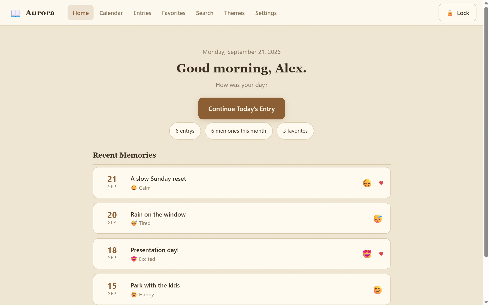

A password-protected, themeable diary that lives entirely on your device. No accounts. No cloud. No subscriptions. Your words stay yours.
Free forever · Works offline · Windows & Android

Built with care for privacy and simplicity.
Your diary stays locked behind a cover screen, with auto-lock when you step away.
Color themes, paper styles and fonts so your diary looks and feels the way you want.
Browse your entries by date. Jump to any day and see which days you wrote.
Full-text search plus tag filtering makes finding that one memory effortless.
Export your entire diary as a JSON file anytime. Import it on any device. No lock-in.
No servers, no accounts, no tracking. Everything is stored locally on your device.
Mark entries as favorites and revisit your best memories with one tap.
Track how you felt and the weather outside with each entry, and spot patterns over time.
No signup, no email, no credit card. Just download and write.
Grab the installer for Windows or the APK for Android below.
Choose a name, pick a theme, set a password. Takes under a minute.
Pick your mood, add tags, and start journaling. That's it.
Free, forever. No account required.
Answers about privacy, data and the apps.
Yes. Your entries are stored only on your device. There are no servers, no accounts, and no analytics. The password is hashed and never leaves your device.
Yes — the web version runs entirely in your browser. Install it as a PWA from your browser menu for a standalone app experience.
Because everything is stored locally, forgetting your password means the diary cannot be unlocked. We strongly recommend periodic JSON backups via Settings → Export.
Yes. Use Settings → Export Backup to save a JSON file, then Settings → Import on the new device.
Yes, completely. It's a personal project shared with the world. No ads, no tracking, no premium tier.
Yes — the Windows and Android apps bundle everything they need. The web version also works offline once loaded.